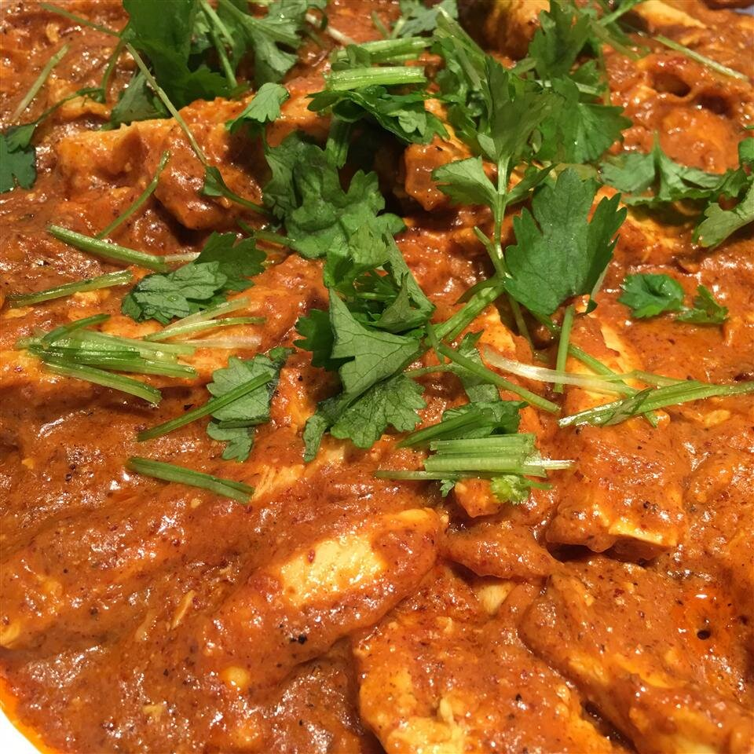

Jake's Homemade Curry
Home

Description
This curry is a mix of a few recipes and made to the tastes of Toto and myself.
This dish is Toto's favourite dish and one of her many rules is that it must only be eaten on Mondays
Ingredients
- 1/2 an onion
- 2 fat cloves of garlic
- 1/2 thumb-sized piece of ginger
- 2 tsp coriander powder
- 1 tsp garam masala
- 1 tsp cumin powder
- 1/2 tsp tumeric powder
- 1/2 tsp chilli powder
- 1/2 tsp cinnamon powder
- 2 cardamom pods
- 1 chicken breast diced
- 350ml of chicken stock or water
- 2 or 3 medium sized potatoes diced
- 2 medium tomatoes roughly cut
- 1 bunch of fresh coriander chopped
- 2 tbs of yoghurt
- Rice and naan or roti to serve
Steps
- Cut and fry onion in oil on low
- Mince garlic and grate ginger. Put aside
- Put all dry spices into bowl
- Add garlic and ginger to pan with onion
- Add chicken to the pan on medium-high
- Add spices to the chicken and coat in the pan
- Add stock to the pan with the potatoes and simmer for 30 mins
- Add tomatoes and coriander and simmer for a further 30 to 60 mins
- Take curry off the heat and serve with rice and bread